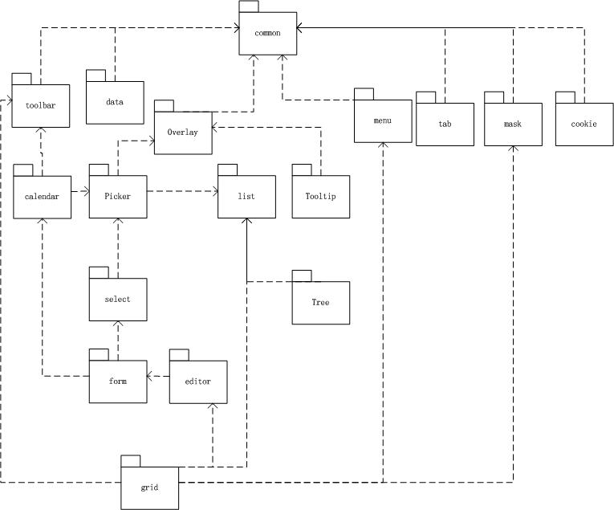

Combine 模块
导引
欢迎使用BUI！在这一章节里，我们将学习以下内容:
- Combine 概念
- BUI的模块
- 如何combine BUI模块
- 关于combine的讨论
Combine 概念
我们先来看一下下面几个问题：
- 我引入了已经包含所有模块的JS(bui-min.js)文件，请求的文件很大，但是仅仅用到了几个模块
- 我使用按需加载，但是在使用时产生多个js文件的请求
- 我如何做到仅使用一个请求，又仅加载自己需要的JS文件呢
我们可以打包合并需要的模块，引入一个js文件的链接，但是存在的问题是：不灵活，复用度低，每一个应用场景都有可能需要独立的打包合并一个js文件。
业界的流行方案是资源文件服务器，支持combine语法，例如：
Combine的概念简单地说就是根据参数把多个js文件合并成一个文件，当然Combine也有其优缺点，用户可以根据场景分析判断是否使用。
- 优点：使用灵活，便于增删模块；有效的减小文件大小和请求数量
- 缺点：多个页面间利用缓存效率不高，难以复用浏览器的缓存js文件。
BUI 的模块
BUI一个模块对应一个单独的JS文件，一个模块中有多个类，下图是所有模块的对应关系：

- common: 包含util类，如JSON、Array、UA等;包含所有UI控件的基类：component
- data: 包含Store、Proxy等类进行数据加载管理
- calendar : 日历控件，包含日期、时间和月份选择
- menu : 菜单，可以通过自定义样式和html渲染自定义菜单
- list : 列表，可以通过自定义样式和html渲染各种列表
- overlay: 包括：Dialog,Message 等悬浮的元素
- select : 包括 Select、Combox和Suggest等选择框
- toolbar : 包括 一般的bar、分页栏、数字分页栏等工具栏
- grid: 表格，包括SimpleGrid,Grid以及一系列Plugins
- tab : 切换标签，可以用于切换内容和导航
- mask: 屏蔽DOM；显示正在加载的屏蔽层
- cookie: 处理cookie
- form: 表单控件，验证、提示信息等强大的表单功能
- editor: 编辑器，可以编辑DOM的数据；编辑列表数据
- picker: 弹出选择列表，单选或多选记录
- tooltip: 鼠标移动到元素显示自定义的提示信息
- tree: 功能丰富的树控件，勾选、连接线、异步加载等功能
Combine BUI模块
BUI所使用的cdn支持combine语法，可以自由地combine所需要的模块
Combine的讨论
组合JS或者CSS并非全部是优点，必须以项目环境来决定，不足之处：
- 服务器需要支持combine语法
- 需要知道模块的依赖关系，并且手工组合所有的模块文件
- 调试不方便
- 多页面如果combine不同，缓存的利用效率很低
综上所述：在使用单页面或者页面较少而又近似度很高的页面；请求模块特别多，并且影响页面加载性能的页面，推荐使用combine模式